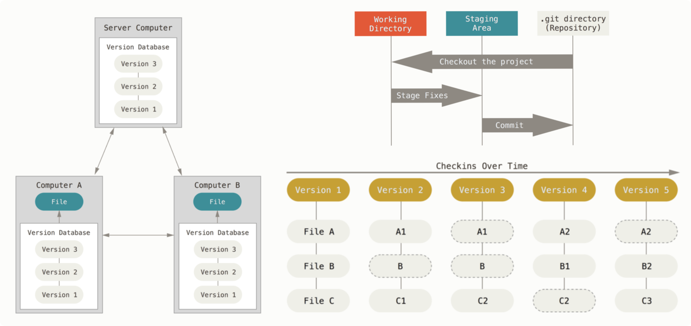

Harmonized neuroimaging data management in Synapsy
Synapsy DMP Training @ Campus Biotech, Geneva
March 08, 2021


BIDS
Brain Imaging Data Structure
What is BIDS?
Specifications to organize and describe neuroimaging data

Comprehensible organization and naming with well-accepted formats
Designed with the Findable, Accessible, Inter-operable and Researchable (FAIR) principles in mind.
https://www.go-fair.org/fair-principles/Image with acquisition metadata
Dataset documentation and metadata

Standard adopted by a growing number of researchers

Results from www.webofknowledge.com
(Date: March 07, 2021)
BIDS official website
How is BIDS useful?
Make data fully understandable by itself thanks to its metadata and documentation files
Facilitate data sharing between lab members and collaborators part of Synapsy
Make code interoperable between projects, lab members, and collaborators part of Synapsy
Very little effort to publish dataset to databases

Databases such as OpenNeuro, LORIS, COINs, XNAT, SciTran and others accept and export datasets organized following BIDS
Benefit of dedicated and well documented tools
For BIDS dataset creation
For validation and data curation support
For dataset query
>>> from bids import BIDSLayout
>>> layout = BIDSLayout('/home/data/ds000117')
>>> layout.get_subjects()
>>> BIDS = bids.layout('/home/data/ds000117');
>>> bids.query(BIDS, 'subjects')
For analysis
A number of processing pipelines handling BIDS datasets (BIDS Apps) are available, ranging from quality control to preprocessing, connectome mapping, and statistical analysis - and maybe one of yours in the future!
How to get started with BIDS?
Online BIDS specifications
Official BIDS Tutorials
https://github.com/bids-standard/bids-starter-kit/wiki/Tutorials
DataLad
What is DataLad?
Data versioning and sharing system
- Built on top of Git and git-annex
 https://git-scm.com/book/en/v2 It allows you to keep track of dataset with large file content as simple as Git is tracking text files
- But it much more than that, as you will see!
What is DataLad capable of?
Keep track of your dataset history
Keep track of your dataset history
- Create an empty DataLad dataset:
A dataset has a history to track files and their modificafications that is explored with Git:datalad create (-c yoda, -c text2git)git log - Record with a descriptive message the dataset or file state to the history
Concise commit messages should summarize the change for future you and others.datalad save -m "messsage" - Report the current dataset state:
A clean status is good practice.datalad status
Dataset consumption and sharing
Dataset consumption and sharing
- Install a DataLad dataset:
A dataset (sub-dataset) can be installed inside a super-dataset (dataset nesting):datalad clonehttps://osf.io/s4tzu/ Only small files and metadata about file availability are present locally after its installation. - To download the actual content of large files:
It allows us to efficiently handle large datasets and download file content on demand.datalad get
Dataset consumption and sharing
- Publish your dataset to a remote dataset repository:
- Create a dataset sibling on a UNIX-like Shell (local or SSH)-accessible machine:
It creates a remote dataset repository and configures it as a dataset sibling to be used as a publication target.datalad create-sibling - Publish the dataset:
It updates all your local changes saved and annexed data to the remote dataset repository.datalad push
- Create a dataset sibling on a UNIX-like Shell (local or SSH)-accessible machine:
Computationally reproducible dataset analysis
computationally reproducible dataset analysis
- DataLad can track source code and computing environment that led to the generation of study results as well as all the generated outputs
http://www.repronim.org/ohbm2018-training/03-01-reproin/
(Computationally) reproducible dataset analysis
- Execute and track input, output and source code:
It links datasets (as subdatasets) and source code, records data origin and command execution, and collect and store provenance of all contents of a dataset created.datalad run
- The analysis step can be re-executed with:
datalad rerun
Computationally reproducible dataset analysis
- Execute and track input, output, source code, and computing environment (in the form of software containers) with the datalad-containers extension:
datalad run-containers
It stores the software container in the dataset, links datasets (as subdatasets) and the software container, records data origin and command execution, and
collect and store provenance of all contents of a dataset created.
→ Fully computationally reproducible analysis
(Computationally) reproducible dataset analysis
- DataLad can comprehensively represent a typical neuroimaging study workflow from raw data to paper results
http://www.repronim.org/ohbm2018-training/03-01-reproin/
How to get started with DataLad?
Follow the great DataLad handbook
What are the steps?
Step 1: Understanding how datasets are organized in each lab